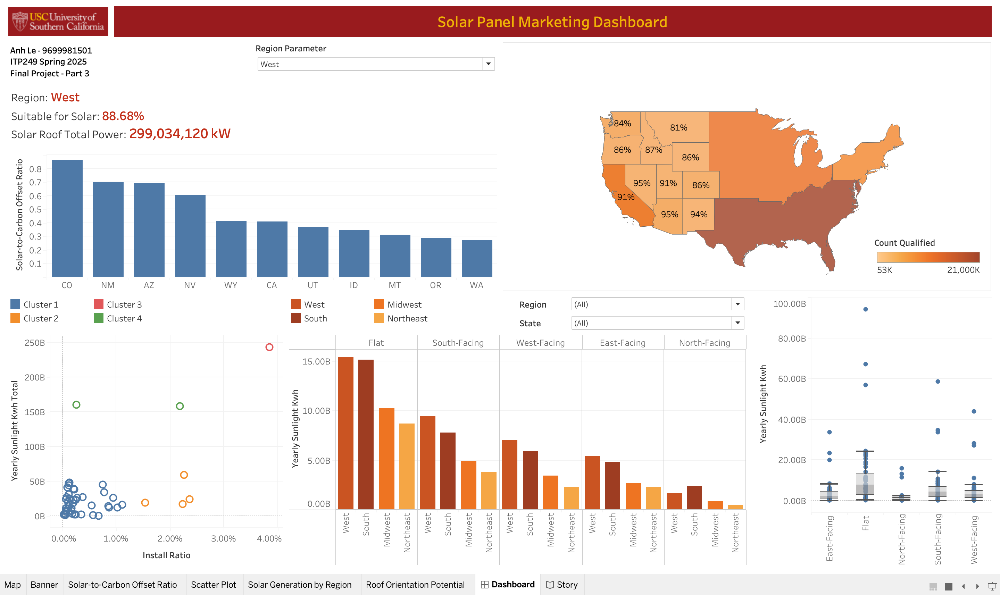

Additional Data Analytics Projects

Google's Project Sunroof: Uncovering U.S. Solar Potential through Data Querying and Visualization
Overview
The TAC 249 (Introduction to Data Analytics) project analyzed Google's Project Sunroof data to uncover regional trends in U.S. solar potential and demonstrate integration of SQL, NoSQL, and data visualization tools.
Business Impact
The project highlights how open data can inform clean-energy investment and policy decisions. For example, the West region shows the highest solar suitability (88.68%) — an insight that could guide solar marketing and infrastructure planning.
Data description:
- project-sunroof-state.csv: aggregated U.S. state-level solar potential data, including building counts, qualification rates, and total sunlight generation estimates from Project Sunroof.
- region lookup table.csv: reference table mapping each U.S. state to its corresponding region.
Tools: MySQL Workbench (SQL), MongoDB (NoSQL), Tableau.
Approach
- Queried the data using SQL, including joins, unions, subqueries, and functions and MongoDB Query Language (MQL) to explore highest-value entries and summary statistics.
- Designed an interactive Tableau dashboard for cross-region comparisons of roof orientation and sunlight potential.
Visualization
Solar Panel Marketing Dashboard — interactive Tableau dashboard visualizing U.S. solar suitability, regional power generation, and orientation potential.
Key Insight
Western and southern U.S. states demonstrate the greatest sunlight hours and solar suitability, suggesting priority markets for solar adoption.
Seoul Bike Rentals Data: Predicting Demand with Machine Learning
Overview
The TAC 216 (Applied Python) final project explored how weather, seasonality, and holidays affect Seoul's bike-rental demand to support smarter resource allocation.
Business Impact
Findings reveal how data-driven forecasting can enhance urban mobility efficiency. For example, summer peaks in demand align with optimal staffing and maintenance schedules, while winter drop-offs suggest reallocation opportunities.
Data description: seoul_bike_sharing.csv
- Source: UC Irvine Machine Learning Repository
- Period: 12/01/2017-11/30/2018
- Contains data about date, hour, weather, season, whether it was a holiday, and whether it was a functioning day.
Tools: Python (pandas, numpy, matplotlib, scikit-learn, sqlite3).
Approach
- Built a reproducible ETL pipeline using sqlite3 and pandas.
- Created matplotlib visualizations for daily, hourly, and seasonal usage trends.
- Trained multilayer perceptron classifier and linear regression models to predict seasons based on weather features and bike demand based on time of day (hour) and weather.
Visualizations
Key Insights
- Summer has the highest bike rental demand, while winter is lowest.
- The model achieved 77% classification accuracy and 50% R² in predicting rentals: performance could be improved.
Critique and Recommendations
- Bike rental demand is influenced by many external factors, such as traffic, infrastructure, income, age, and day of the week, which are not captured in this dataset.
- Linear regression met course requirements but failed to model complex rental patterns, suggesting that nonlinear methods could improve accuracy.
- Future work should add weekday data (.weekday()), test nonlinear regressions, and include broader socioeconomic variables for better prediction.